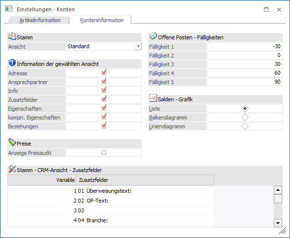
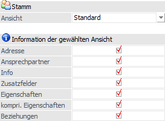
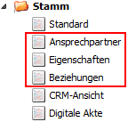
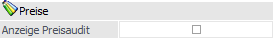
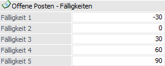
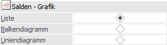
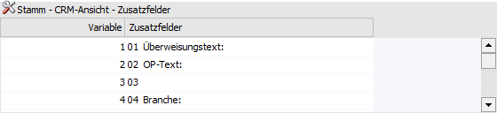
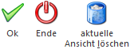

Es besteht die Möglichkeit einige Auswertungsbereiche der WinLine INFO-Module, sowohl auf der Kontenseite als auch auf der Artikelseite, auf individuellen Anforderungen hin anzupassen (z.B. Darstellung der Diagramme).
Die Definition hierfür findet über
1 WinLine INFO
1 Info
1 Einstellungen
1 Einstellungen - Info
statt.
Hinweis
Aus der Artikelinformation kann das Programm auch über das Kontextmenü der rechten Maustaste (Funktion "Einstellungen") aufgerufen werden.
Das Fenster unterteilt sich in die folgenden Register, welche in den nachfolgenden Kapiteln detailliert beschrieben werden:
ü Register "Artikelinformation"
In
dem Register " Artikelinformation" können spezielle Einstellungen für die
Artikelinformation vorgenommen werden.
ü Register "Konteninformation"
(aktuelles Register)
In dem Register " Konteninformation" können spezielle
Einstellungen für die Kontoinformation vorgenommen werden.
Register "Konteninformation"

Die in dem Register "Konteninformation" zu treffenden Einstellungen gelten für die Bereiche "Stamm", "Salden" und "Offene Posten" der folgenden INFO-Module:
ü Kunden
ü Lieferanten
ü Interessenten
ü Kontoinformation
Stamm

Ø Ansicht
In dem Bereich "Stamm" der Kontoinformation können verschiedene Ansichten dargestellt werden.
Um eine neue Ansicht anzulegen wird in dem Feld "Ansicht" die neue Bezeichnung eingetragen und mit "Enter" bestätigt. Die nachfolgenden aufgeführten Optionen können dann der aktuellen Ansicht zugeordnet werden.
Beispiel

Hinweis
Nicht mehr benötigte Ansichten können nach Auswahl aus der Liste durch Anklicken des Löschen-Buttons wieder entfernt werden.
Ø Informationen der gewählten Ansicht
Durch Aktivieren der in diesem Bereich befindlichen Optionen (z.B. Adresse oder Ansprechpartner) kann bestimmt werden, welche Informationen in der Stammansicht des Kontos (Bereich "Stamm") angezeigt werden sollen.
Hinweis
Die Darstellung der Eigenschaften erfolgt über das Kennzeichen "Eigenschaften", bei dem dann alle Eigenschaften angedruckt werden. Ist das Kennzeichen gesetzt, kann über das zweite Kennzeichen "kompri. Eigenschaften" gesteuert werden, dass nur jene Eigenschaften angezeigt werden, die angehakt bzw. gefüllt sind.
Preise

Ø Anzeige Preisaudit
Mit Hilfe dieser Option kann definiert werden, ob die Anzeige der Preisaudits im Bereich "Preise" gewünscht ist oder nicht.
Offene Posten - Fälligkeiten

Ø Fälligkeit
Hier können die Fälligkeitsgrenzen für die Bildschirmdarstellung der Offene Posten mit Grafik definiert werden. Die Fälligkeitsübersicht kann eine Vorschau (positive Zahlen) eine Rückschau (negative Zahlen) oder eine Kombination aus beiden sein (z.B. wie viel war vor 30 Tagen fällig, wie viel ist jetzt fällig, wie viel wird in 50 Tagen fällig sein => -30 / 0 / 50).
Hinweis
Die Einstellung der Fälligkeit wird benutzerspezifisch gespeichert und hat keine Auswirkung auf die OP-Übersichtsliste in WinLine FIBU, wo ebenfalls eine Fälligkeit definiert werden kann.
Salden / Grafik

Ø Salden
Für den Bereich der "Salden" kann hier gewählt werden, ob die grafische Ansicht der Salden in Form eines Balkendiagramms oder eines Liniendiagramms dargestellt werden soll.
Hinweis
Es handelt sich hierbei um die Standarddarstellung der Grafik. Über die rechte Maustaste kann diese jederzeit angepasst werden.
Stamm - CRM-Ansicht - Zusatzfelder

Ø Variable / Zusatzfelder
Für die automatisch erscheinende Stammansicht "CRM-Ansicht" kann an dieser Stelle definiert werden, in welcher Reihenfolge die Zusatzfelder unter dem dort aufgeführten Punkt "Zusatzinfos" angezeigt werden sollen.
Buttons

Ø Ok
Durch Anwahl des Buttons "Ok" bzw. durch Drücken der F5-Taste werden die getätigten Änderungen gespeichert. Das Fenster bleibt hierbei geöffnet, so dass z.B. in dem Register "Konteninformation" ebenfalls Eingaben vorgenommen werden können.
Ø Ende
Durch Anwahl des Buttons "Ende" bzw. der Taste ESC wird der Programmbereich verlassen und alle nicht gespeicherten Eingaben verworfen.
Ø aktuelle Ansicht löschen
Durch Anwahl dieses Buttons wird die aktuell ausgewählte Ansicht gelöscht.